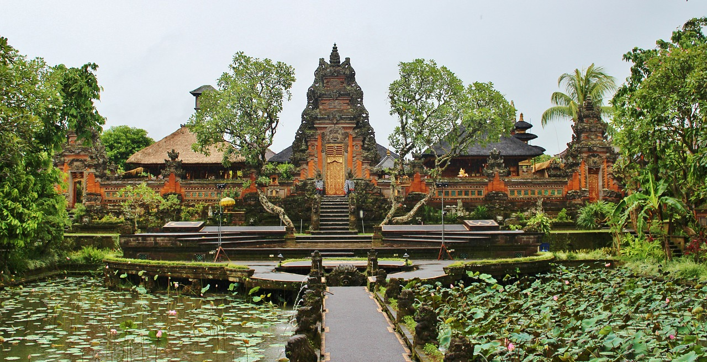

La rivière Toklat est un cours d'eau d'Alaska, aux États-Unis située dans la région de recensement de Yukon-Koyukuk. C'est un affluent de la rivière Kantishna, elle-même affluent de la rivière Tanana, laquelle se jette dans le fleuve Yukon. Son nom indien a été référencé sous Toclat River en 1885 par le lieutenant Allen, mais il s'agissait plutôt de la rivière Kantishna, le nom de Toklat a donc été attribué à un des principaux affluents de cette rivière. Longue de 85 milles (137 km), elle se jette dans la rivière Kantishna à 50 milles (80 km) à l'est des monts Bitzhtini.
Le temple d'Ubud

Bali est une île de l’Indonésie qui présente la particularité d’être hindouiste. Ceci contrairement au reste des îles de l’Indonésie, essentiellement de religion musulmane. Cette culture hindouiste se traduit encore de nos jours par le culte dédié aux dieux, et notamment dans les temples.
On compte près de 10000 temples à Bali ! Ceux-ci sont régulièrement garnis de fleurs et font l’objet de rituels, de processions, de danses, ou encore d’offrandes. La visite de ces temples passe d’ailleurs toujours par le port d’une tenue décente, ainsi que d’un sarong. Le sarong est une pièce de tissu à porter autour de la taille, à la manière d’une jupe. Des sarongs sont en général fournis (à la location) à l’entrée des temples, mais vous pouvez également en acheter un une bonne fois pour toutes.
New York Skyline
A New York, les paysages ne manquent pas, mais l’image la plus symbolique de Manhattan est sans aucun doute sa skyline. De jour comme de nuit, cette célèbre skyline, qui fait la joie des touristes et locaux, offre une vue à couper le souffle et les lumières scintillantes à la nuit tombée rendent le paysage époustouflant. Pour les plus hauts gratte-ciel de la ville il y a au total : 45 buildings égaux ou supérieurs à 200 mètres et six buildings égaux ou supérieurs à 300 mètres. Par comparaison, il y a en Europe vingt gratte-ciel égaux ou supérieurs à 200 mètres et un seul dépassant les 300 mètres.